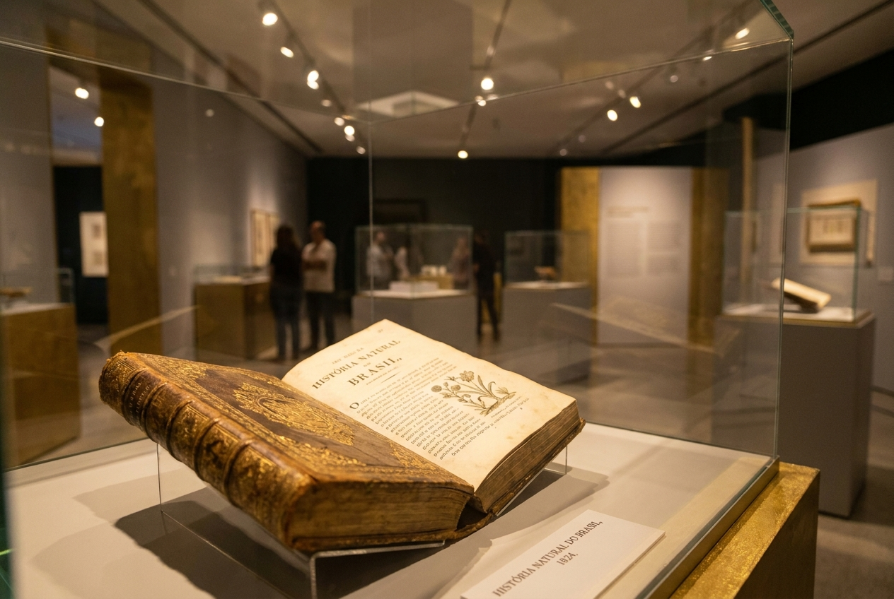

Anos de legado institucional
Academia de Educação do Brasil
Preservando a Educação, a Cultura e a História Brasileira.
A ACEBRA Paraná conecta tradição intelectual, pesquisa e memória nacional em uma presença institucional de excelência.
Membros acadêmicos e colaboradores
Projetos culturais em andamento
Sobre a Instituição
História e Missão
Fundada com o propósito de elevar o debate educacional no Paraná, a ACEBRA Seccional Paraná consolidou-se como um farol de sabedoria e tradição. Nossa jornada é marcada pela defesa intransigente dos valores intelectuais.
Missão
Promover a educação e a cultura por meio do reconhecimento de trajetórias exemplares.
Visão
Ser a referência máxima em curadoria de conhecimento histórico e educacional no Brasil.

Tradição Inabalável
- Curadoria Ética
- Excelência Acadêmica
- Patrimônio Histórico
O Museu da Educação
Histórias de educação que inspiram o futuro
Acervo & Memórias
Documentos e objetos que atravessam gerações
Um mergulho nos manuscritos, cadernos e registros que celebram a construção da educação no Paraná.
Exposição Imersiva
Retratos e espaços que contam histórias
Ambientes curatoriais que destacam a evolução pedagógica por meio de imagens, quadros e narrativas visuais.
ACEBRA Paraná
Memórias da ACEBRA
Encontros, ações culturais e momentos que fazem parte da história da Academia de Educação do Brasil no Paraná.
Agenda e Iniciativas
Projetos & Eventos
Comprometidos com a difusão do conhecimento, mantemos uma agenda ativa de encontros intelectuais e simpósios de alto nível.
Ver Calendário 2024Simpósio: O Futuro da Educação Humanista
Conferência Magna: Memória Paranaense
Exposição: Iconografia Escolar no Século XIX
Reconhecimento
“A ACEBRA Paraná não é apenas uma guardiã do passado, mas uma força viva que fortalece o futuro da educação brasileira.”
Projetos culturais e educacionais apoiados.
Anos de legado institucional e liderança acadêmica.
de parceiros institucionais em pesquisa e preservação.